Thamnophis
The genus Thamnophis (family Colubridae) has 35 living species in SnakeList (none venomous), recorded in 8 countries.
- 35living species
- 35non-venomous
- 8countries
About the genus
A genus of the family Colubridae (colubrids).
What the name means: Thamnophis – from the Greek thamnos (bush or shrub) and ophis (snake).[1]
Source
- Meaning of the name Thamnophis. Illinois Natural History Survey.
Information last reviewed 9 November 2026.
Species
Showing 35 species
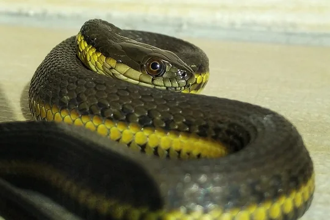
Blackbelly Garter SnakeThamnophis melanogaster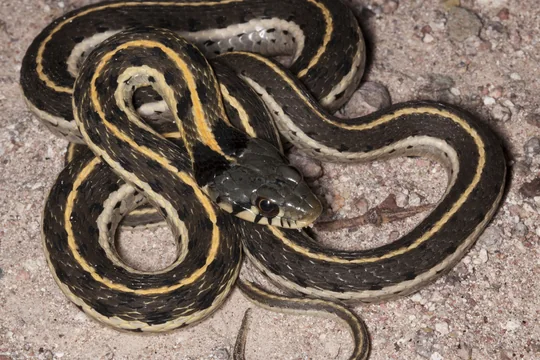
Blackneck Garter SnakeThamnophis cyrtopsis Butler's Garter SnakeThamnophis butleri
Butler's Garter SnakeThamnophis butleri Checkered Garter SnakeThamnophis marcianus
Checkered Garter SnakeThamnophis marcianus Common GartersnakeThamnophis sirtalis
Common GartersnakeThamnophis sirtalis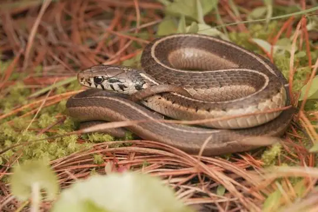
Conant's Garter SnakeThamnophis conanti Eastern RibbonsnakeThamnophis saurita
Eastern RibbonsnakeThamnophis saurita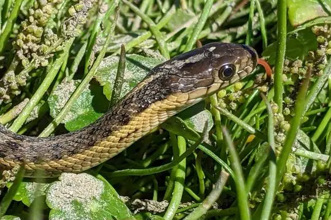
Giant Garter SnakeThamnophis gigas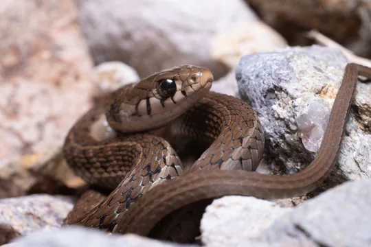
Godman's Garter SnakeThamnophis godmani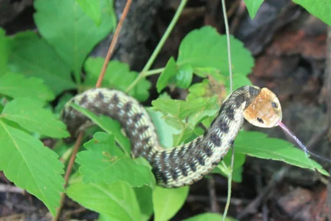
Goldenhead Garter SnakeThamnophis chrysocephalus Highland Garter SnakeThamnophis fulvus
Highland Garter SnakeThamnophis fulvus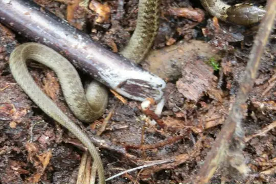
Liner's Garter SnakeThamnophis lineri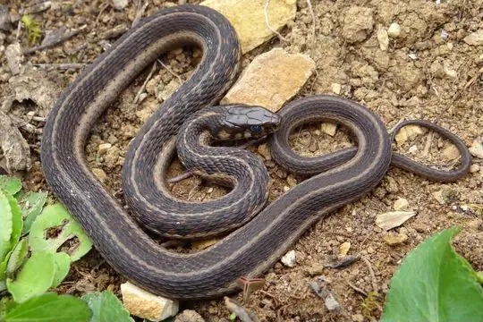
Liner's Garter Snake (bogerti)Thamnophis bogerti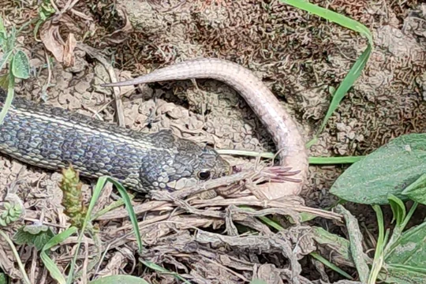
Longtail Alpine Garter SnakeThamnophis scalaris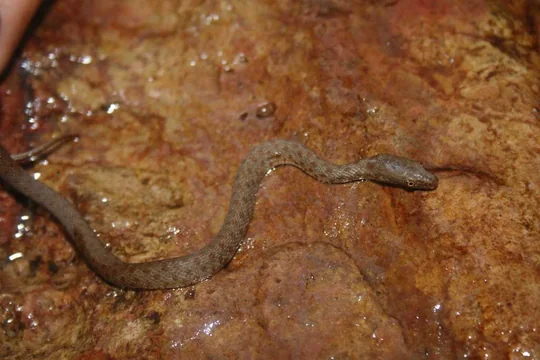
Madrean Narrowheaded Garter SnakeThamnophis unilabialis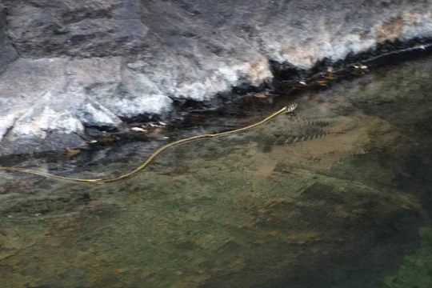
Mexican Garter SnakeThamnophis eques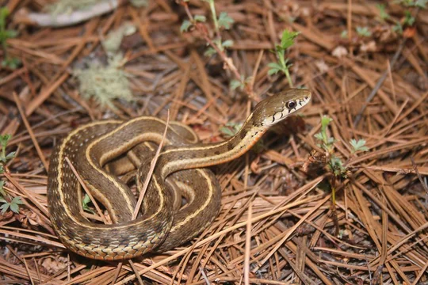
Mexican Wandering Garter SnakeThamnophis errans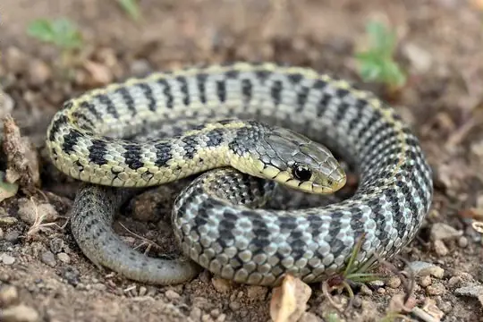
Montane Garter SnakeThamnophis exsul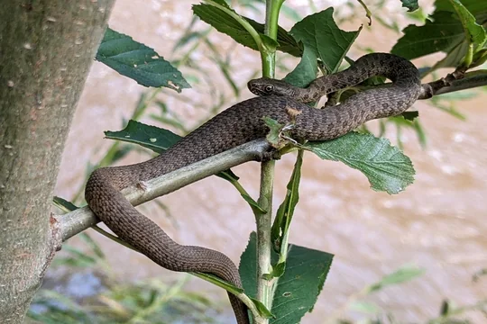
Narrowhead WatersnakeThamnophis rufipunctatus Northwestern Garter SnakeThamnophis ordinoides
Northwestern Garter SnakeThamnophis ordinoides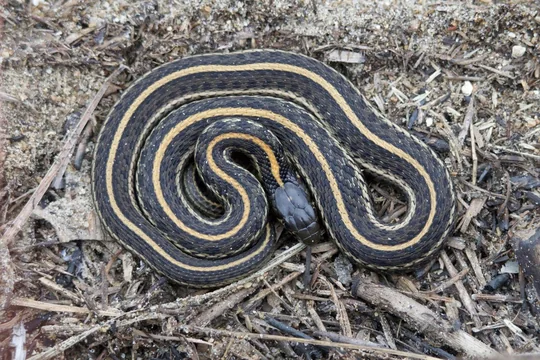
Plains Garter SnakeThamnophis radix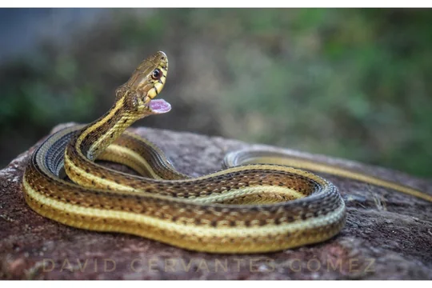
Rossman's Garter SnakeThamnophis rossmani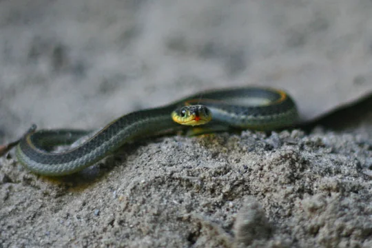
Santa Cruz Garter SnakeThamnophis atratus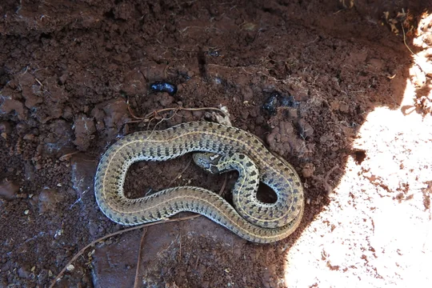
Short-tail Alpine Garter SnakeThamnophis scaliger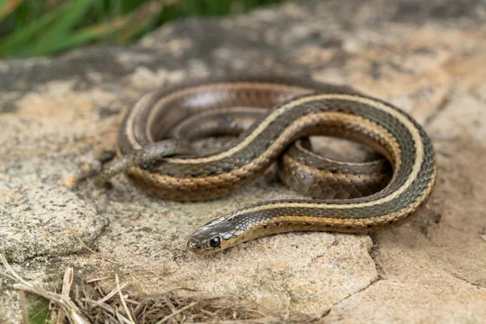
Shorthead Garter SnakeThamnophis brachystoma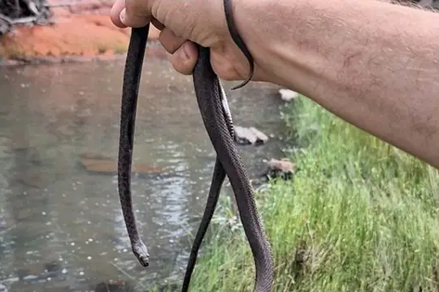
Southern Durango Spotted Garter SnakeThamnophis nigronuchalis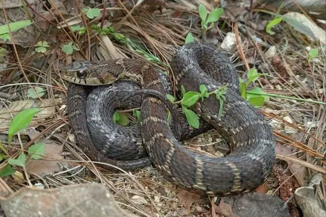
Sumichrast's Garter SnakeThamnophis sumichrasti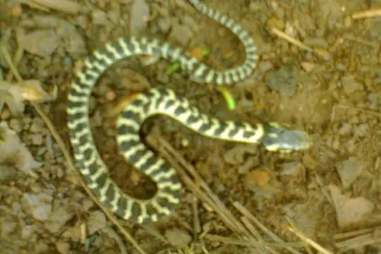
Tamaulipan Montane Garter SnakeThamnophis mendax- No photo yetTepalcatepec Valley GartersnakeThamnophis postremus
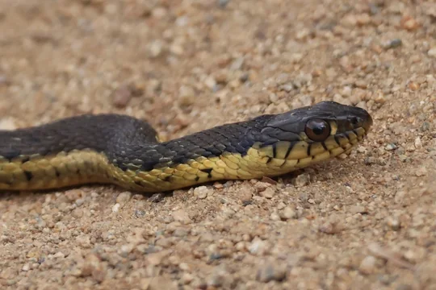
Two-striped Garter SnakeThamnophis hammondii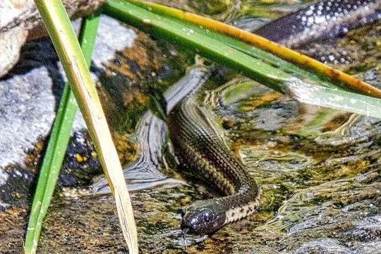
West Coast Garter SnakeThamnophis validus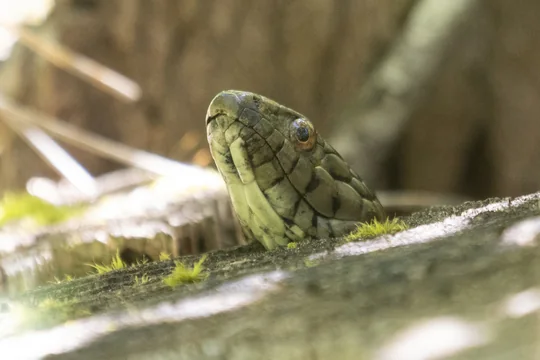
Western Aquatic Garter SnakeThamnophis couchii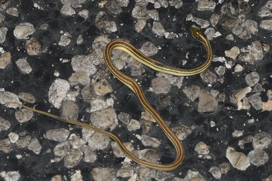
Western RibbonsnakeThamnophis proximus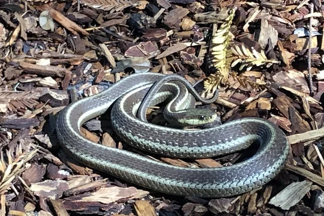
Western Terrestrial Garter SnakeThamnophis elegans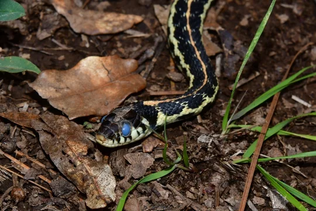
Yellow-throated GartersnakeThamnophis pulchrilatus
No snakes in Thamnophis match.
About the genus Thamnophis
- Distribution: living species recorded in 8 countries, on one continent: North America.
- Family: Colubridae.
- Countries and territories: Belize, Canada, El Salvador, Guatemala, Honduras, Mexico, Nicaragua, United States.
Compare its species
Its living species side by side. Lengths come only from SnakeList’s reviewed, sourced accounts; the others are left blank rather than guessed.
Show the table of all 35 species
| Species | Venom | Recorded in | Adult length (reviewed accounts) |
|---|---|---|---|
| Blackbelly Garter Snake Thamnophis melanogaster | Non-venomous | 1 country (North America) | No reviewed account yet |
| Blackneck Garter Snake Thamnophis cyrtopsis | Non-venomous | 3 countries (North America) | No reviewed account yet |
| Butler's Garter Snake Thamnophis butleri | Non-venomous | 2 countries (North America) | No reviewed account yet |
| Checkered Garter Snake Thamnophis marcianus | Non-venomous | 6 countries (North America) | Usually 46 to 61 cm; up to 107 cm |
| Common Gartersnake Thamnophis sirtalis | Non-venomous | 2 countries (North America) | Usually 46-76 cm; rarely over 1.2 m |
| Conant's Garter Snake Thamnophis conanti | Non-venomous | 1 country (North America) | No reviewed account yet |
| Eastern Ribbonsnake Thamnophis saurita | Non-venomous | 2 countries (North America) | About 40 to 90 cm (16 to 35 in) |
| Giant Garter Snake Thamnophis gigas | Non-venomous | 1 country (North America) | No reviewed account yet |
| Godman's Garter Snake Thamnophis godmani | Non-venomous | 1 country (North America) | No reviewed account yet |
| Goldenhead Garter Snake Thamnophis chrysocephalus | Non-venomous | 1 country (North America) | No reviewed account yet |
| Highland Garter Snake Thamnophis fulvus | Non-venomous | 4 countries (North America) | No reviewed account yet |
| Liner's Garter Snake Thamnophis lineri | Non-venomous | 1 country (North America) | No reviewed account yet |
| Liner's Garter Snake (bogerti) Thamnophis bogerti | Non-venomous | 1 country (North America) | No reviewed account yet |
| Longtail Alpine Garter Snake Thamnophis scalaris | Non-venomous | 1 country (North America) | No reviewed account yet |
| Madrean Narrowheaded Garter Snake Thamnophis unilabialis | Non-venomous | 1 country (North America) | No reviewed account yet |
| Mexican Garter Snake Thamnophis eques | Non-venomous | 2 countries (North America) | No reviewed account yet |
| Mexican Wandering Garter Snake Thamnophis errans | Non-venomous | 1 country (North America) | No reviewed account yet |
| Montane Garter Snake Thamnophis exsul | Non-venomous | 1 country (North America) | No reviewed account yet |
| Narrowhead Watersnake Thamnophis rufipunctatus | Non-venomous | 2 countries (North America) | No reviewed account yet |
| Northwestern Garter Snake Thamnophis ordinoides | Non-venomous | 2 countries (North America) | No reviewed account yet |
| Plains Garter Snake Thamnophis radix | Non-venomous | 2 countries (North America) | No reviewed account yet |
| Rossman's Garter Snake Thamnophis rossmani | Non-venomous | 1 country (North America) | No reviewed account yet |
| Santa Cruz Garter Snake Thamnophis atratus | Non-venomous | 1 country (North America) | No reviewed account yet |
| Short-tail Alpine Garter Snake Thamnophis scaliger | Non-venomous | 1 country (North America) | No reviewed account yet |
| Shorthead Garter Snake Thamnophis brachystoma | Non-venomous | 1 country (North America) | No reviewed account yet |
| Southern Durango Spotted Garter Snake Thamnophis nigronuchalis | Non-venomous | 1 country (North America) | No reviewed account yet |
| Sumichrast's Garter Snake Thamnophis sumichrasti | Non-venomous | 1 country (North America) | No reviewed account yet |
| Tamaulipan Montane Garter Snake Thamnophis mendax | Non-venomous | 1 country (North America) | No reviewed account yet |
| Tepalcatepec Valley Gartersnake Thamnophis postremus | Non-venomous | 1 country (North America) | No reviewed account yet |
| Two-striped Garter Snake Thamnophis hammondii | Non-venomous | 2 countries (North America) | About 46 to 76 cm (18 to 30 in) |
| West Coast Garter Snake Thamnophis validus | Non-venomous | 1 country (North America) | No reviewed account yet |
| Western Aquatic Garter Snake Thamnophis couchii | Non-venomous | 2 countries (North America) | No reviewed account yet |
| Western Ribbonsnake Thamnophis proximus | Non-venomous | 2 countries (North America) | No reviewed account yet |
| Western Terrestrial Garter Snake Thamnophis elegans | Non-venomous | 3 countries (North America) | No reviewed account yet |
| Yellow-throated Gartersnake Thamnophis pulchrilatus | Non-venomous | 1 country (North America) | No reviewed account yet |